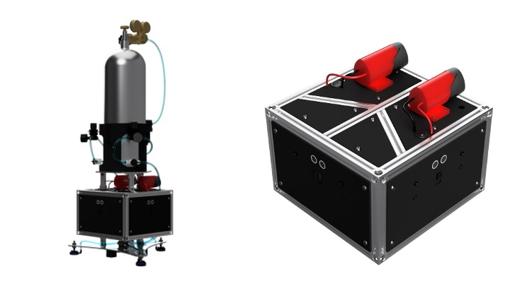

01 / Controls · Hardware · M.Sc. thesis
Satellite control, from model to hardware.
An autonomous satellite testbed on a 6 × 6 meter air-bearing table, built to connect model predictive control research with physical experiments.

The challenge
Control a floating platform with eight binary cold-gas thrusters. Each actuator is either on or off, and the controller must choose a feasible combination quickly enough to track a path on physical hardware.
The project became my mechanical engineering master’s thesis at the University of Kentucky. It combines mechanical and pneumatic design, embedded control, motion capture, optimization, and experimental validation.
What I built
I designed and built the platform end to end: the structure, air bearings, cold-gas system, and ESP32 control interface. A Python simulation and hardware stack share the controller and matched physical parameters.
- Mixed-integer model predictive control using Gurobi to handle binary thruster commands.
- OptiTrack state feedback, experiment logging, and mission visualization.
- Individual thruster characterization and a digital twin for simulation-to-hardware comparisons.
- Waypoint navigation and shape-following missions, including custom DXF paths.
Validation
The reported hardware results achieved a final position error of 0.024 m and attitude error of 0.51° at a 16.7 Hz control rate. The recorded comparison reports a 1.47% difference in total thruster usage: 188.04 seconds on hardware and 190.80 seconds in simulation.
These are results from the documented testbed experiments, rather than guarantees for other hardware or missions. The thesis contains the controller design, methodology, and validation context.
Explore the work